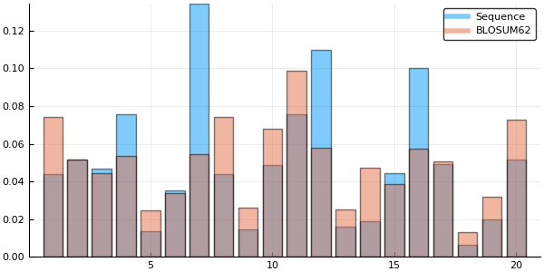
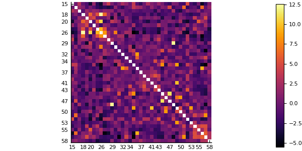
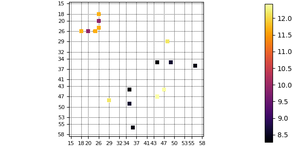

Information
The Information module of MIToS defines types and functions useful to calculate information measures (e.g. Mutual Information (MI) and Entropy) over a Multiple Sequence Alignment (MSA). This module was designed to count Residues (defined in the MSA module) in special contingency tables (as fast as possible) and to derive probabilities from these counts. Also, includes methods for applying corrections to those tables, e.g. pseudocounts and pseudo frequencies. Finally, Information allows to use these probabilities and counts to estimate information measures and other frequency based values.
using MIToS.Information # to load the Information moduleFeatures
Estimate multi dimensional frequencies and probability tables from sequences, MSAs, etc...
Correction for small number of observations
Correction for data redundancy on a MSA
Estimate information measures
Calculate corrected mutual information between residues
Contents
- Information
Counting residues
MIToS Information module defines a multidimensional ContingencyTable type and two types wrapping it, Counts and Probabilities, to store occurrences or probabilities. The ContingencyTable type stores the contingency matrix, its marginal values and total. These types are parametric, taking three ordered parameters:
T: The type used for storing the counts or probabilities, e.g.Float64. It's
possible to use BigFloat if more precision it's needed.
N: It's the dimension of the table and should be anInt.A: This should be a type, subtype ofResidueAlphabet, i.e.:UngappedAlphabet,
GappedAlphabet or ReducedAlphabet.
ContingencyTable can be used for storing probabilities or counts. The wrapper types Probabilities and Counts are mainly intended to dispatch in methods that need to know if the matrix has probabilities or counts, e.g. entropy. In general, the use of ContingencyTable is recommended over the use of Probabilities and Counts.
In this way, a matrix for storing pairwise probabilities of residues (without gaps) can be initialized using:
using MIToS.Information
Pij = ContingencyTable(Float64, Val{2}, UngappedAlphabet())MIToS.Information.ContingencyTable{Float64,2,MIToS.MSA.UngappedAlphabet} :
table : 20×20 Named Array{Float64,2}
Dim_1 ╲ Dim_2 │ A R N D C Q … P S T W Y V
──────────────┼──────────────────────────────────────────────────────────────
A │ 0.0 0.0 0.0 0.0 0.0 0.0 … 0.0 0.0 0.0 0.0 0.0 0.0
R │ 0.0 0.0 0.0 0.0 0.0 0.0 0.0 0.0 0.0 0.0 0.0 0.0
N │ 0.0 0.0 0.0 0.0 0.0 0.0 0.0 0.0 0.0 0.0 0.0 0.0
D │ 0.0 0.0 0.0 0.0 0.0 0.0 0.0 0.0 0.0 0.0 0.0 0.0
C │ 0.0 0.0 0.0 0.0 0.0 0.0 0.0 0.0 0.0 0.0 0.0 0.0
Q │ 0.0 0.0 0.0 0.0 0.0 0.0 0.0 0.0 0.0 0.0 0.0 0.0
E │ 0.0 0.0 0.0 0.0 0.0 0.0 0.0 0.0 0.0 0.0 0.0 0.0
G │ 0.0 0.0 0.0 0.0 0.0 0.0 0.0 0.0 0.0 0.0 0.0 0.0
H │ 0.0 0.0 0.0 0.0 0.0 0.0 0.0 0.0 0.0 0.0 0.0 0.0
⋮ ⋮ ⋮ ⋮ ⋮ ⋮ ⋮ ⋱ ⋮ ⋮ ⋮ ⋮ ⋮ ⋮
K │ 0.0 0.0 0.0 0.0 0.0 0.0 0.0 0.0 0.0 0.0 0.0 0.0
M │ 0.0 0.0 0.0 0.0 0.0 0.0 0.0 0.0 0.0 0.0 0.0 0.0
F │ 0.0 0.0 0.0 0.0 0.0 0.0 0.0 0.0 0.0 0.0 0.0 0.0
P │ 0.0 0.0 0.0 0.0 0.0 0.0 0.0 0.0 0.0 0.0 0.0 0.0
S │ 0.0 0.0 0.0 0.0 0.0 0.0 0.0 0.0 0.0 0.0 0.0 0.0
T │ 0.0 0.0 0.0 0.0 0.0 0.0 0.0 0.0 0.0 0.0 0.0 0.0
W │ 0.0 0.0 0.0 0.0 0.0 0.0 0.0 0.0 0.0 0.0 0.0 0.0
Y │ 0.0 0.0 0.0 0.0 0.0 0.0 0.0 0.0 0.0 0.0 0.0 0.0
V │ 0.0 0.0 0.0 0.0 0.0 0.0 … 0.0 0.0 0.0 0.0 0.0 0.0
marginals : 20×2 Named Array{Float64,2}
Residue ╲ Dim │ Dim_1 Dim_2
──────────────┼─────────────
A │ 0.0 0.0
R │ 0.0 0.0
N │ 0.0 0.0
D │ 0.0 0.0
C │ 0.0 0.0
Q │ 0.0 0.0
E │ 0.0 0.0
G │ 0.0 0.0
H │ 0.0 0.0
⋮ ⋮ ⋮
K │ 0.0 0.0
M │ 0.0 0.0
F │ 0.0 0.0
P │ 0.0 0.0
S │ 0.0 0.0
T │ 0.0 0.0
W │ 0.0 0.0
Y │ 0.0 0.0
V │ 0.0 0.0
total : 0.0[High level interface] It is possible to use the functions count and probabilities to easily calculate the frequencies of sequences or columns of a MSA, where the number of sequences/columns determine the dimension of the resulting table.
using MIToS.Information
using MIToS.MSA # to use res"..." to create Vector{Residue}
column_i = res"AARANHDDRDC-"
column_j = res"-ARRNHADRAVY"
# Nij[R,R] = 1 1 = 2
Nij = count(column_i, column_j)MIToS.Information.Counts{Float64,2,MIToS.MSA.UngappedAlphabet} wrapping a MIToS.Information.ContingencyTable{Float64,2,MIToS.MSA.UngappedAlphabet} :
table : 20×20 Named Array{Float64,2}
Dim_1 ╲ Dim_2 │ A R N D C Q … P S T W Y V
──────────────┼──────────────────────────────────────────────────────────────
A │ 1.0 1.0 0.0 0.0 0.0 0.0 … 0.0 0.0 0.0 0.0 0.0 0.0
R │ 0.0 2.0 0.0 0.0 0.0 0.0 0.0 0.0 0.0 0.0 0.0 0.0
N │ 0.0 0.0 1.0 0.0 0.0 0.0 0.0 0.0 0.0 0.0 0.0 0.0
D │ 2.0 0.0 0.0 1.0 0.0 0.0 0.0 0.0 0.0 0.0 0.0 0.0
C │ 0.0 0.0 0.0 0.0 0.0 0.0 0.0 0.0 0.0 0.0 0.0 1.0
Q │ 0.0 0.0 0.0 0.0 0.0 0.0 0.0 0.0 0.0 0.0 0.0 0.0
E │ 0.0 0.0 0.0 0.0 0.0 0.0 0.0 0.0 0.0 0.0 0.0 0.0
G │ 0.0 0.0 0.0 0.0 0.0 0.0 0.0 0.0 0.0 0.0 0.0 0.0
H │ 0.0 0.0 0.0 0.0 0.0 0.0 0.0 0.0 0.0 0.0 0.0 0.0
⋮ ⋮ ⋮ ⋮ ⋮ ⋮ ⋮ ⋱ ⋮ ⋮ ⋮ ⋮ ⋮ ⋮
K │ 0.0 0.0 0.0 0.0 0.0 0.0 0.0 0.0 0.0 0.0 0.0 0.0
M │ 0.0 0.0 0.0 0.0 0.0 0.0 0.0 0.0 0.0 0.0 0.0 0.0
F │ 0.0 0.0 0.0 0.0 0.0 0.0 0.0 0.0 0.0 0.0 0.0 0.0
P │ 0.0 0.0 0.0 0.0 0.0 0.0 0.0 0.0 0.0 0.0 0.0 0.0
S │ 0.0 0.0 0.0 0.0 0.0 0.0 0.0 0.0 0.0 0.0 0.0 0.0
T │ 0.0 0.0 0.0 0.0 0.0 0.0 0.0 0.0 0.0 0.0 0.0 0.0
W │ 0.0 0.0 0.0 0.0 0.0 0.0 0.0 0.0 0.0 0.0 0.0 0.0
Y │ 0.0 0.0 0.0 0.0 0.0 0.0 0.0 0.0 0.0 0.0 0.0 0.0
V │ 0.0 0.0 0.0 0.0 0.0 0.0 … 0.0 0.0 0.0 0.0 0.0 0.0
marginals : 20×2 Named Array{Float64,2}
Residue ╲ Dim │ Dim_1 Dim_2
──────────────┼─────────────
A │ 2.0 3.0
R │ 2.0 3.0
N │ 1.0 1.0
D │ 3.0 1.0
C │ 1.0 0.0
Q │ 0.0 0.0
E │ 0.0 0.0
G │ 0.0 0.0
H │ 1.0 1.0
⋮ ⋮ ⋮
K │ 0.0 0.0
M │ 0.0 0.0
F │ 0.0 0.0
P │ 0.0 0.0
S │ 0.0 0.0
T │ 0.0 0.0
W │ 0.0 0.0
Y │ 0.0 0.0
V │ 0.0 1.0
total : 10.0You can use sum to get the stored total:
sum(Nij) # There are 12 Residues, but 2 are gaps10.0Contingency tables can be indexed using Int or Residues:
Nij[2, 2] # Use Int to index the table2.0Nij[Residue('R'), Residue('R')] # Use Residue to index the table2.0The number makes reference to the specific index in the table e.g [2,2] references the second row and the second column. The use of the number used to encode the residue to index the table is dangerous. The equivalent index number of a residue depends on the used alphabet and Int(Residue('X')) will be always out of bounds.
Indexing with Residues works as expected. It uses the alphabet of the contingency table to find the index of the Residue.
using MIToS.Information
using MIToS.MSA
alphabet = ReducedAlphabet("(AILMV)(NQST)(RHK)(DE)(FWY)CGP")
column_i = res"AARANHDDRDC-"
column_j = res"-ARRNHADRAVY"
# Fij[R,R] = 1 1 1 = 3 # RHK
Fij = count(column_i, column_j, alphabet=alphabet)MIToS.Information.Counts{Float64,2,MIToS.MSA.ReducedAlphabet} wrapping a MIToS.Information.ContingencyTable{Float64,2,MIToS.MSA.ReducedAlphabet} :
table : 8×8 Named Array{Float64,2}
Dim_1 ╲ Dim_2 │ AILMV NQST RHK DE FWY C G P
──────────────┼───────────────────────────────────────────────────────
AILMV │ 1.0 0.0 1.0 0.0 0.0 0.0 0.0 0.0
NQST │ 0.0 1.0 0.0 0.0 0.0 0.0 0.0 0.0
RHK │ 0.0 0.0 3.0 0.0 0.0 0.0 0.0 0.0
DE │ 2.0 0.0 0.0 1.0 0.0 0.0 0.0 0.0
FWY │ 0.0 0.0 0.0 0.0 0.0 0.0 0.0 0.0
C │ 1.0 0.0 0.0 0.0 0.0 0.0 0.0 0.0
G │ 0.0 0.0 0.0 0.0 0.0 0.0 0.0 0.0
P │ 0.0 0.0 0.0 0.0 0.0 0.0 0.0 0.0
marginals : 8×2 Named Array{Float64,2}
Residue ╲ Dim │ Dim_1 Dim_2
──────────────┼─────────────
AILMV │ 2.0 4.0
NQST │ 1.0 1.0
RHK │ 3.0 4.0
DE │ 3.0 1.0
FWY │ 0.0 0.0
C │ 1.0 0.0
G │ 0.0 0.0
P │ 0.0 0.0
total : 10.0Fij[Residue('R'), Residue('R')] # Use Residue to index the table3.0The function getcontingencytable allows to access the wrapped ContingencyTable in a Counts object. You can use it, in combination with normalize to get a contingency table of probabilities. The result can be wrapped inside a Probabilities object:
Probabilities(normalize(getcontingencytable(Fij)))MIToS.Information.Probabilities{Float64,2,MIToS.MSA.ReducedAlphabet} wrapping a MIToS.Information.ContingencyTable{Float64,2,MIToS.MSA.ReducedAlphabet} :
table : 8×8 Named Array{Float64,2}
Dim_1 ╲ Dim_2 │ AILMV NQST RHK DE FWY C G P
──────────────┼───────────────────────────────────────────────────────
AILMV │ 0.1 0.0 0.1 0.0 0.0 0.0 0.0 0.0
NQST │ 0.0 0.1 0.0 0.0 0.0 0.0 0.0 0.0
RHK │ 0.0 0.0 0.3 0.0 0.0 0.0 0.0 0.0
DE │ 0.2 0.0 0.0 0.1 0.0 0.0 0.0 0.0
FWY │ 0.0 0.0 0.0 0.0 0.0 0.0 0.0 0.0
C │ 0.1 0.0 0.0 0.0 0.0 0.0 0.0 0.0
G │ 0.0 0.0 0.0 0.0 0.0 0.0 0.0 0.0
P │ 0.0 0.0 0.0 0.0 0.0 0.0 0.0 0.0
marginals : 8×2 Named Array{Float64,2}
Residue ╲ Dim │ Dim_1 Dim_2
──────────────┼─────────────
AILMV │ 0.2 0.4
NQST │ 0.1 0.1
RHK │ 0.3 0.4
DE │ 0.3 0.1
FWY │ 0.0 0.0
C │ 0.1 0.0
G │ 0.0 0.0
P │ 0.0 0.0
total : 1.0Example: Plotting the probabilities of each residue in a sequence
Similar to the count function, the probabilities function can take at least one sequence (vector of residues) and returns the probabilities of each residue. Optionally, the keyword argument alphabet could be used to count some residues in the same cell of the table.
probabilities(res"AARANHDDRDC", alphabet=alphabet)MIToS.Information.Probabilities{Float64,1,MIToS.MSA.ReducedAlphabet} wrapping a MIToS.Information.ContingencyTable{Float64,1,MIToS.MSA.ReducedAlphabet} :
table : 8-element Named Array{Float64,1}
Dim_1 │
───────┼──────────
AILMV │ 0.272727
NQST │ 0.0909091
RHK │ 0.272727
DE │ 0.272727
FWY │ 0.0
C │ 0.0909091
G │ 0.0
P │ 0.0
total : 1.0Here, we are going to use the probabilities function to get the residue probabilities of a particular sequence from UniProt.
use the getsequence function, from the MSA module, to get the sequence from a FASTA downloaded from UniProt.
julia> using MIToS.Information # to use the probabilities function
julia> using MIToS.MSA # to use getsequence on the one sequence FASTA (canonical) from UniProt
julia> seq = read("http://www.uniprot.org/uniprot/P29374.fasta", FASTA) # Small hack: read the single sequence as a MSA
AnnotatedMultipleSequenceAlignment with 0 annotations : 1×1257 Named Array{MIToS.MSA.Residue,2}
Seq ╲ Col │ …
───────────────────────────────────────────────────────────────────────────────────────────────────────────┼──────
sp|P29374|ARI4A_HUMAN AT-rich interactive domain-containing protein 4A OS=Homo sapiens GN=ARID4A PE=1 SV=3 │ …
julia> probabilities(seq[1,:]) # Select the single sequence and calculate the probabilities
MIToS.Information.Probabilities{Float64,1,MIToS.MSA.UngappedAlphabet} wrapping a MIToS.Information.ContingencyTable{Float64,1,MIToS.MSA.UngappedAlphabet} :
table : 20-element Named Array{Float64,1}
Dim_1 │
───────┼───────────
A │ 0.043755
R │ 0.0517104
N │ 0.0469372
D │ 0.0755768
C │ 0.0135243
Q │ 0.035004
E │ 0.134447
G │ 0.043755
H │ 0.0143198
⋮ ⋮
K │ 0.109785
M │ 0.0159109
F │ 0.0190931
P │ 0.0445505
S │ 0.100239
T │ 0.0493238
W │ 0.00636436
Y │ 0.0198886
V │ 0.0517104
total : 1.0In the previous example, using getsequence(seq,1) instead of seq[1,:] will return the sequence as a matrix with a single column to keep information for both dimensions. To use probabilities (or count) you can make use of the Julia's vec function to transform the matrix to a vector, e.g.: probabilities(vec(getsequence(seq,1))).
using Plots # We choose Plots because it's intuitive, concise and backend independent
pyplot(size=(600,300))Plots.PyPlotBackend()You can plot together with the probabilities of each residue in a given sequence, the probabilities of each residue estimated with the BLOSUM62 substitution matrix. That matrix is exported as a constant by the Information module as BLOSUM62_Pi.
bar(
1:20,
[ frequencies BLOSUM62_Pi ],
lab = [ "Sequence" "BLOSUM62" ],
alpha=0.5
)
Low count corrections
Low number of observations can lead to sparse contingency tables, that lead to wrong probability estimations. It is shown in Buslje et. al. 2009 that low-count corrections, can lead to improvements in the contact prediction capabilities of the Mutual Information. The Information module has available two low-count corrections:
that low-count corrections, can lead to improvements in the contact prediction capabilities of the Mutual Information. The Information module has available two low-count corrections:
Additive Smoothing
; the constant value pseudocount described in Buslje et. al. 2009. BLOSUM62 based pseudo frequencies of residues pairs, similar to Altschul et. al. 1997
.
using MIToS.MSA
msa = read("http://pfam.xfam.org/family/PF09776/alignment/full", Stockholm)
filtercolumns!(msa, columngapfraction(msa) .< 0.5) # delete columns with 50% gaps or more
column_i = msa[:,1]
column_j = msa[:,2]178-element Named Array{MIToS.MSA.Residue,1}
Seq │
───────────────────────────┼──
E4XN03_OIKDI/34-146 │ -
G1RVK4_NOMLE/46-161 │ R
A0A0V0S2G9_9BILA/731-840 │ S
B4NHY3_DROWI/2-106 │ -
G6CRH5_DANPL/1-73 │ -
A0A194PY65_PAPXU/4-116 │ -
RM55_DROME/2-106 │ -
G5C999_HETGA/5-102 │ -
G7Y6C1_CLOSI/30-139 │ -
⋮ ⋮
M3WM55_FELCA/10-125 │ H
A0A0C2BEU2_9BILA/5-105 │ -
A0A0N5CCD5_STREA/1-104 │ -
B4QTH5_DROSI/2-106 │ -
T1FXF3_HELRO/1-90 │ -
A0A090MXF3_STRRB/2-104 │ -
G3WPK1_SARHA/11-126 │ H
RM55_MOUSE/9-124 │ H
M3XPJ7_MUSPF/10-125 │ RIf you have a preallocated ContingencyTable you can use count! to fill it, this prevent to create a new table as count do. However, you should note that count! adds the new counts to the pre existing values, so in this case, we want to start with a table initialized with zeros.
using MIToS.Information
const alphabet = ReducedAlphabet("(AILMV)(NQST)(RHK)(DE)(FWY)CGP")
Nij = ContingencyTable(Float64, Val{2}, alphabet)MIToS.Information.ContingencyTable{Float64,2,MIToS.MSA.ReducedAlphabet} :
table : 8×8 Named Array{Float64,2}
Dim_1 ╲ Dim_2 │ AILMV NQST RHK DE FWY C G P
──────────────┼───────────────────────────────────────────────────────
AILMV │ 0.0 0.0 0.0 0.0 0.0 0.0 0.0 0.0
NQST │ 0.0 0.0 0.0 0.0 0.0 0.0 0.0 0.0
RHK │ 0.0 0.0 0.0 0.0 0.0 0.0 0.0 0.0
DE │ 0.0 0.0 0.0 0.0 0.0 0.0 0.0 0.0
FWY │ 0.0 0.0 0.0 0.0 0.0 0.0 0.0 0.0
C │ 0.0 0.0 0.0 0.0 0.0 0.0 0.0 0.0
G │ 0.0 0.0 0.0 0.0 0.0 0.0 0.0 0.0
P │ 0.0 0.0 0.0 0.0 0.0 0.0 0.0 0.0
marginals : 8×2 Named Array{Float64,2}
Residue ╲ Dim │ Dim_1 Dim_2
──────────────┼─────────────
AILMV │ 0.0 0.0
NQST │ 0.0 0.0
RHK │ 0.0 0.0
DE │ 0.0 0.0
FWY │ 0.0 0.0
C │ 0.0 0.0
G │ 0.0 0.0
P │ 0.0 0.0
total : 0.0# table weights pseudocount sequences...
count!(Nij, NoClustering(), NoPseudocount(), column_i, column_j)MIToS.Information.ContingencyTable{Float64,2,MIToS.MSA.ReducedAlphabet} :
table : 8×8 Named Array{Float64,2}
Dim_1 ╲ Dim_2 │ AILMV NQST RHK DE FWY C G P
──────────────┼───────────────────────────────────────────────────────
AILMV │ 0.0 1.0 9.0 0.0 0.0 0.0 2.0 0.0
NQST │ 2.0 10.0 1.0 0.0 2.0 5.0 1.0 0.0
RHK │ 2.0 2.0 21.0 0.0 3.0 11.0 1.0 0.0
DE │ 0.0 0.0 0.0 0.0 0.0 0.0 0.0 0.0
FWY │ 0.0 1.0 1.0 0.0 0.0 0.0 0.0 0.0
C │ 0.0 4.0 8.0 0.0 1.0 4.0 0.0 0.0
G │ 0.0 2.0 0.0 0.0 0.0 0.0 0.0 0.0
P │ 1.0 0.0 0.0 0.0 0.0 0.0 0.0 0.0
marginals : 8×2 Named Array{Float64,2}
Residue ╲ Dim │ Dim_1 Dim_2
──────────────┼─────────────
AILMV │ 12.0 5.0
NQST │ 21.0 20.0
RHK │ 40.0 40.0
DE │ 0.0 0.0
FWY │ 2.0 6.0
C │ 17.0 20.0
G │ 2.0 4.0
P │ 1.0 0.0
total : 95.0You can use NoClustering() in places where clustering weights are required to not use weights. Also, NoPseudocount() in places where pseudocount values are required to not use pseudocounts.
In cases like the above, where there are few observations, it is possible to apply a constant pseudocount to the counting table. This module defines the type AdditiveSmoothing and the correspond fill! and apply_pseudocount! methods to efficiently add or fill with a constant value each element of the table.
apply_pseudocount!(Nij, AdditiveSmoothing(1.0))MIToS.Information.ContingencyTable{Float64,2,MIToS.MSA.ReducedAlphabet} :
table : 8×8 Named Array{Float64,2}
Dim_1 ╲ Dim_2 │ AILMV NQST RHK DE FWY C G P
──────────────┼───────────────────────────────────────────────────────
AILMV │ 1.0 2.0 10.0 1.0 1.0 1.0 3.0 1.0
NQST │ 3.0 11.0 2.0 1.0 3.0 6.0 2.0 1.0
RHK │ 3.0 3.0 22.0 1.0 4.0 12.0 2.0 1.0
DE │ 1.0 1.0 1.0 1.0 1.0 1.0 1.0 1.0
FWY │ 1.0 2.0 2.0 1.0 1.0 1.0 1.0 1.0
C │ 1.0 5.0 9.0 1.0 2.0 5.0 1.0 1.0
G │ 1.0 3.0 1.0 1.0 1.0 1.0 1.0 1.0
P │ 2.0 1.0 1.0 1.0 1.0 1.0 1.0 1.0
marginals : 8×2 Named Array{Float64,2}
Residue ╲ Dim │ Dim_1 Dim_2
──────────────┼─────────────
AILMV │ 20.0 13.0
NQST │ 29.0 28.0
RHK │ 48.0 48.0
DE │ 8.0 8.0
FWY │ 10.0 14.0
C │ 25.0 28.0
G │ 10.0 12.0
P │ 9.0 8.0
total : 159.0[High level interface.] The count function has a pseudocounts keyword argument that can take a AdditiveSmoothing value to easily calculate occurrences with pseudocounts. Also the alphabet keyword argument can be used to chage the default alphabet (i.e. )
count(column_i, column_j, pseudocounts=AdditiveSmoothing(1.0), alphabet=alphabet)MIToS.Information.Counts{Float64,2,MIToS.MSA.ReducedAlphabet} wrapping a MIToS.Information.ContingencyTable{Float64,2,MIToS.MSA.ReducedAlphabet} :
table : 8×8 Named Array{Float64,2}
Dim_1 ╲ Dim_2 │ AILMV NQST RHK DE FWY C G P
──────────────┼───────────────────────────────────────────────────────
AILMV │ 1.0 2.0 10.0 1.0 1.0 1.0 3.0 1.0
NQST │ 3.0 11.0 2.0 1.0 3.0 6.0 2.0 1.0
RHK │ 3.0 3.0 22.0 1.0 4.0 12.0 2.0 1.0
DE │ 1.0 1.0 1.0 1.0 1.0 1.0 1.0 1.0
FWY │ 1.0 2.0 2.0 1.0 1.0 1.0 1.0 1.0
C │ 1.0 5.0 9.0 1.0 2.0 5.0 1.0 1.0
G │ 1.0 3.0 1.0 1.0 1.0 1.0 1.0 1.0
P │ 2.0 1.0 1.0 1.0 1.0 1.0 1.0 1.0
marginals : 8×2 Named Array{Float64,2}
Residue ╲ Dim │ Dim_1 Dim_2
──────────────┼─────────────
AILMV │ 20.0 13.0
NQST │ 29.0 28.0
RHK │ 48.0 48.0
DE │ 8.0 8.0
FWY │ 10.0 14.0
C │ 25.0 28.0
G │ 10.0 12.0
P │ 9.0 8.0
total : 159.0To use the conditional probability matrix BLOSUM62_Pij in the calculation of pseudo frequencies $G$ for the pair of residues $a$, $b$, it should be calculated first the real frequencies/probabilities $p_{a,b}$. The observed probabilities are then used to estimate the pseudo frequencies.
Finally, the probability $P$ of each pair of residues $a$, $b$ between the columns $i$, $j$ is the weighted mean between the observed frequency $p$ and BLOSUM62-based pseudo frequency $G$, where α is generally the number of clusters or the number of sequences of the MSA and β is an empiric weight value. β was determined to be close to 8.512.
This could be easily achieved using the pseudofrequencies keyword argument of the probabilities function. That argument can take a BLOSUM_Pseudofrequencies object that is created with α and β as first and second argument, respectively.
Pij = probabilities(column_i, column_j, pseudofrequencies=BLOSUM_Pseudofrequencies(nsequences(msa), 8.512))MIToS.Information.Probabilities{Float64,2,MIToS.MSA.UngappedAlphabet} wrapping a MIToS.Information.ContingencyTable{Float64,2,MIToS.MSA.UngappedAlphabet} :
table : 20×20 Named Array{Float64,2}
Dim_1 ╲ Dim_2 │ A R … Y V
──────────────┼──────────────────────────────────────────────────────
A │ 0.000200739 0.0102745 … 0.000100287 0.000131278
R │ 0.000367889 0.0709206 0.0203914 0.000273342
N │ 0.000137237 0.000119185 6.37001e-5 8.91908e-5
D │ 9.54315e-5 9.55298e-5 5.02528e-5 6.64555e-5
C │ 0.000266746 0.0204132 0.0102489 0.000166391
Q │ 0.000120495 0.000133352 6.57726e-5 9.18663e-5
E │ 0.000124372 0.00014048 7.17899e-5 9.10347e-5
G │ 0.000166918 0.000140118 6.99607e-5 9.89338e-5
H │ 8.30989e-5 8.48861e-5 6.11241e-5 5.71344e-5
⋮ ⋮ ⋮ ⋱ ⋮ ⋮
K │ 0.000191556 0.000254845 0.000129199 0.000146252
M │ 4.97407e-5 6.00345e-5 2.77798e-5 3.33784e-5
F │ 8.10509e-5 7.95621e-5 3.96533e-5 4.79409e-5
P │ 6.90459e-5 7.06432e-5 3.80607e-5 6.30076e-5
S │ 0.000210055 0.000177697 0.000101738 0.000147911
T │ 0.000133685 0.000134698 6.86807e-5 9.33539e-5
W │ 1.61993e-5 1.86925e-5 9.7159e-6 1.08245e-5
Y │ 6.08181e-5 6.69783e-5 3.96913e-5 3.97839e-5
V │ 0.000168302 0.000223887 … 8.09729e-5 0.000106123
marginals : 20×2 Named Array{Float64,2}
Residue ╲ Dim │ Dim_1 Dim_2
──────────────┼─────────────────────────
A │ 0.0332277 0.00284131
R │ 0.358362 0.10378
N │ 0.0321149 0.00172538
D │ 0.00146444 0.00148035
C │ 0.17516 0.205964
Q │ 0.0521598 0.0216689
E │ 0.00200663 0.00195809
G │ 0.0223478 0.0429226
H │ 0.041674 0.215154
⋮ ⋮ ⋮
K │ 0.0133355 0.093596
M │ 0.000798111 0.000801491
F │ 0.0112275 0.0216895
P │ 0.0112054 0.000946134
S │ 0.123641 0.164065
T │ 0.012111 0.0221748
W │ 0.00026151 0.0105836
Y │ 0.0110642 0.0318123
V │ 0.0730264 0.00194366
total : 1.0You can also use apply_pseudofrequencies! in a previously filled probability contingency table. i.e. apply_pseudofrequencies!(Pij, BLOSUM_Pseudofrequencies(α, β))
BLOSUM_Pseudofrequencies can be only be applied in normalized/probability tables with UngappedAlphabet.
Correction for data redundancy in a MSA
A simple way to reduce redundancy in a MSA without losing sequences, is clusterization and sequence weighting. The weight of each sequence should be 1/N, where N is the number of sequences in its cluster. The Clusters type of the MSA module stores the weights. This vector of weights can be extracted (with the getweight function) and used by the count and probabilities functions with the keyword argument weights. Also it's possible to use the Clusters as second argument of the function count!.
clusters = hobohmI(msa, 62) # from MIToS.MSAMIToS.MSA.Clusters([1, 43, 2, 15, 2, 2, 1, 1, 1, 6 … 2, 3, 1, 1, 1, 2, 1, 1, 1, 1], [1, 2, 3, 4, 5, 4, 4, 2, 6, 7 … 15, 2, 16, 28, 4, 64, 28, 2, 2, 2], [1.0, 0.0232558, 0.5, 0.0666667, 0.5, 0.0666667, 0.0666667, 0.0232558, 0.5, 1.0 … 0.142857, 0.0232558, 0.2, 0.25, 0.0666667, 1.0, 0.25, 0.0232558, 0.0232558, 0.0232558])count(msa[:,1], msa[:,2], weights=clusters)MIToS.Information.Counts{Float64,2,MIToS.MSA.UngappedAlphabet} wrapping a MIToS.Information.ContingencyTable{Float64,2,MIToS.MSA.UngappedAlphabet} :
table : 20×20 Named Array{Float64,2}
Dim_1 ╲ Dim_2 │ A R … Y V
──────────────┼──────────────────────────────────────────────
A │ 0.0 0.0232558 … 0.0 0.0
R │ 0.0 1.61628 0.523256 0.0
N │ 0.0 0.0 0.0 0.0
D │ 0.0 0.0 0.0 0.0
C │ 0.0 0.273256 0.166667 0.0
Q │ 0.0 0.0 0.0 0.0
E │ 0.0 0.0 0.0 0.0
G │ 0.0 0.0 0.0 0.0
H │ 0.0 0.0 0.0 0.0
⋮ ⋮ ⋮ ⋱ ⋮ ⋮
K │ 0.0 0.0 0.0 0.0
M │ 0.0 0.0 0.0 0.0
F │ 0.0 0.0 0.0 0.0
P │ 0.0 0.0 0.0 0.0
S │ 0.0 0.0 0.0 0.0
T │ 0.0 0.0 0.0 0.0
W │ 0.0 0.0 0.0 0.0
Y │ 0.0 0.0 0.0 0.0
V │ 0.0 0.0 … 0.0 0.0
marginals : 20×2 Named Array{Float64,2}
Residue ╲ Dim │ Dim_1 Dim_2
──────────────┼─────────────────────
A │ 1.22326 0.0
R │ 6.17132 1.91279
N │ 1.5 0.0
D │ 0.0 0.0
C │ 3.21938 3.34574
Q │ 4.0 1.06667
E │ 0.0 0.0
G │ 0.47619 1.42326
H │ 1.06977 1.9186
⋮ ⋮ ⋮
K │ 0.2 1.5
M │ 0.0 0.0
F │ 1.0 0.4
P │ 0.25 0.0
S │ 4.36611 7.93571
T │ 0.166667 2.0
W │ 0.0 0.0232558
Y │ 0.0232558 0.689922
V │ 0.875 0.0
total : 25.665946843853824Estimating information measures on an MSA
The Information module has a number of functions defined to calculate information measures from Counts and Probabilities:
entropy: Shannon entropy (H)marginal_entropy: Shannon entropy (H) of the marginalskullback_leibler: Kullback-Leibler (KL) divergencemutual_information: Mutual Information (MI)normalized_mutual_information: Normalized Mutual Information (nMI) by Entropygap_intersection_percentagegap_union_percentage
Information measure functions take optionally the base as the last positional argument (default: e). You can use 2.0 to measure information in bits.
using MIToS.Information
using MIToS.MSA
Ni = count(res"PPCDPPPPPKDKKKKDDGPP") # Ni has the count table of residues in this low complexity sequence
H = entropy(Ni) # returns the Shannon entropy in nats (base e)1.327362863420189H = entropy(Ni, 2.0) # returns the Shannon entropy in bits (base 2)1.9149798205164812Information module defines special iteration functions to easily and efficiently compute a measure over a MSA. In particular, mapcolfreq! and mapseqfreq! map a function that takes a table of Counts or Probabilities. The table is filled in place with the counts or probabilities of each column or sequence of a MSA, respectively. mapcolpairfreq! and mapseqpairfreq! are similar, but they fill the table using pairs of columns or sequences, respectively.
This functions take three positional arguments: the function f to be calculated, the msa and table of Counts or Probabilities.
After that, this function takes some keyword arguments:
weights(default:NoClustering()) : Weights to be used for table counting.pseudocounts(default:NoPseudocount()) :Pseudocountobject to be applied to table.pseudofrequencies(default:NoPseudofrequencies()) :Pseudofrequenciesto be
applied to the normalized (probabilities) table.
mapcolpairfreq! and mapseqpairfreq! also have a fourth positional argument usediagonal that indicates if the function should be applied to identical element pairs (default to Val{true}). This two functions also have an extra keyword argument diagonalvalue (default to zero) to indicate the value used to fill the diagonal elements if usediagonal is Val{false}.
Example: Estimating H(X) and H(X, Y) over an MSA
In this example, we are going to use mapcolfreq! and mapcolpairfreq! to estimate Shannon entropy of MSA columns H(X) and the joint entropy H(X, Y) of columns pairs, respectively.
using MIToS.MSA
msa = read("http://pfam.xfam.org/family/PF09776/alignment/full", Stockholm)AnnotatedMultipleSequenceAlignment with 202 annotations : 178×116 Named Array{MIToS.MSA.Residue,2}
Seq ╲ Col │ 26 27 28 29 30 … 165 166 167 168 169
───────────────────────────┼────────────────────────────────────────────────────
E4XN03_OIKDI/34-146 │ - - - - - … - - - - -
G1RVK4_NOMLE/46-161 │ - L R Q S Q F W T R
A0A0V0S2G9_9BILA/731-840 │ - - - - - Y L W K K
B4NHY3_DROWI/2-106 │ - - - - - K F I K K
G6CRH5_DANPL/1-73 │ - - - - - K Y L K K
A0A194PY65_PAPXU/4-116 │ - - - - - K Y I K K
RM55_DROME/2-106 │ - - - - - K Y I K K
G5C999_HETGA/5-102 │ - - - - - R F W T -
G7Y6C1_CLOSI/30-139 │ - - - - - F L - - -
⋮ ⋮ ⋮ ⋮ ⋮ ⋮ ⋱ ⋮ ⋮ ⋮ ⋮ ⋮
M3WM55_FELCA/10-125 │ L L R Q H Q F W T K
A0A0C2BEU2_9BILA/5-105 │ - - - - - K F W S -
A0A0N5CCD5_STREA/1-104 │ - - - - - G L W K -
B4QTH5_DROSI/2-106 │ - - - - - K Y I K K
T1FXF3_HELRO/1-90 │ - - - - - Y L W K K
A0A090MXF3_STRRB/2-104 │ - - - - - K L W K -
G3WPK1_SARHA/11-126 │ - L Q Q N K F W K K
RM55_MOUSE/9-124 │ L L R H C Q F W T K
M3XPJ7_MUSPF/10-125 │ - L Q Q P … R F W T KWe are going to count residues to estimate the entropy. The entropy estimation is performed over a rehused Counts object. The result will be a vector containing the values estimated over each column without counting gaps (UngappedAlphabet).
using MIToS.Information
Hx = mapcolfreq!(entropy, msa, Counts(ContingencyTable(Float64, Val{1}, UngappedAlphabet())))1×116 Named Array{Float64,2}
Function ╲ Col │ 26 27 … 168 169
──────────────────┼──────────────────────────────────────────────
StatsBase.entropy │ 0.154076 0.104732 … 1.45319 0.389377If we want the joint entropy between columns pairs, we need to use a bidimensional table of Counts and mapcolpairfreq!.
Hxy = mapcolpairfreq!(entropy, msa, Counts(ContingencyTable(Float64, Val{2}, UngappedAlphabet())))116×116 Named PairwiseListMatrices.PairwiseListMatrix{Float64,true,Array{Float64,1}}
Col1 ╲ Col2 │ 26 27 28 … 167 168 169
────────────┼──────────────────────────────────────────────────────────────
26 │ 0.154076 0.154076 1.31712 … 0.158411 1.21392 0.523586
27 │ 0.154076 0.104732 1.22963 0.110453 1.24079 0.617242
28 │ 1.31712 1.22963 1.21303 1.22746 2.18138 1.52297
29 │ 0.657599 0.691757 1.85316 0.789908 1.76837 1.30739
30 │ 1.68486 1.88893 2.43484 2.04833 2.6745 2.26013
31 │ 1.70705 1.65135 2.3727 1.93191 2.60141 1.88972
32 │ 1.18671 1.24484 2.19531 1.58709 2.31757 1.89908
33 │ 1.56679 1.46489 2.29681 1.87687 2.5379 2.0889
34 │ 1.35059 1.3686 2.20335 1.64673 2.39524 1.76504
⋮ ⋮ ⋮ ⋮ ⋱ ⋮ ⋮ ⋮
161 │ 0.315396 0.361788 1.53444 2.32731 2.63551 1.90222
162 │ 1.23122 1.27751 2.12047 2.59423 2.70685 2.25488
163 │ 0.158411 0.110453 1.22746 1.03774 1.48904 0.438413
164 │ 1.18782 1.28922 2.24043 2.82306 2.924 2.37534
165 │ 1.00747 1.04469 1.90654 2.50421 2.57873 2.00587
166 │ 0.315396 0.220352 1.29571 1.69791 2.19351 1.39281
167 │ 0.158411 0.110453 1.22746 1.01288 2.12922 1.25158
168 │ 1.21392 1.24079 2.18138 2.12922 1.45319 1.64239
169 │ 0.523586 0.617242 1.52297 … 1.25158 1.64239 0.389377In the above examples, we indicate the type of each occurrence in the counting and the probability table to use. Also, it's possible for some measures as entropy and mutual information, to estimate the values only with the count table (without calculate the probability table). Estimating measures only with a ResidueCount table, when this is possible, should be faster than using a probability table.
Time_Pab = map(1:100) do x
time = @elapsed mapcolpairfreq!(entropy, msa, Probabilities(ContingencyTable(Float64, Val{2}, UngappedAlphabet())))
end
Time_Nab = map(1:100) do x
time = @elapsed mapcolpairfreq!(entropy, msa, Counts(ContingencyTable(Float64, Val{2}, UngappedAlphabet())))
end
using Plots
pyplot()
histogram( [Time_Pab Time_Nab],
labels = ["Using ResidueProbability" "Using ResidueCount"],
xlabel = "Execution time [seconds]" )
Corrected Mutual Information
MIToS ships with two methods to easily calculate corrected mutual information. The first is the algorithm described in Buslje et. al. 2009. This algorithm can be accessed through the buslje09 function and includes:
Low count correction using
AdditiveSmoothingSequence weighting after a
hobohmIclusteringAverage Product Correction (APC) proposed by
Dunn et. al. 2008, through the APC! function that takes a MI matrix.
Z score correction using the functions
shuffle!from the MSA module andzscore
from the PairwiseListMatrices package.
MIToS.Information.buslje09 — Function.buslje09 takes a MSA or a file and a Format as first arguments. It calculates a Z score and a corrected MI/MIp as described on Busjle et. al. 2009.
keyword argument, type, default value and descriptions:
- lambda Float64 0.05 Low count value
- clustering Bool true Sequence clustering (Hobohm I)
- threshold 62 Percent identity threshold for clustering
- maxgap Float64 0.5 Maximum fraction of gaps in positions included in calculation
- apc Bool true Use APC correction (MIp)
- samples Int 100 Number of samples for Z-score
- fixedgaps Bool true Fix gaps positions for the random samples
- alphabet ResidueAlphabet UngappedAlphabet() Residue alphabet to be usedThis function returns:
- Z score
- MI or MIpThe second, implemented in the BLMI function, has the same corrections that the above algorithm, but use BLOSUM62 pseudo frequencies. This function is slower than buslje09 (at the same number of samples), but gives better performance (for structural contact prediction) when the MSA has less than 400 clusters after a Hobohm I at 62% identity.
MIToS.Information.BLMI — Function.BLMI takes a MSA or a file and a Format as first arguments. It calculates a Z score (ZBLMI) and a corrected MI/MIp as described on Busjle et. al. 2009 but using using BLOSUM62 pseudo frequencies instead of a fixed pseudocount.
Keyword argument, type, default value and descriptions:
- beta Float64 8.512 β for BLOSUM62 pseudo frequencies
- lambda Float64 0.0 Low count value
- threshold 62 Percent identity threshold for sequence clustering (Hobohm I)
- maxgap Float64 0.5 Maximum fraction of gaps in positions included in calculation
- apc Bool true Use APC correction (MIp)
- samples Int 50 Number of samples for Z-score
- fixedgaps Bool true Fix gaps positions for the random samplesThis function returns:
- Z score (ZBLMI)
- MI or MIp using BLOSUM62 pseudo frequencies (BLMI/BLMIp)Example: Estimating corrected MI from an MSA
using MIToS.MSA
using MIToS.Information
msa = read("http://pfam.xfam.org/family/PF16078/alignment/full", Stockholm)
ZMIp, MIp = buslje09(msa)
ZMIp39×39 Named PairwiseListMatrices.PairwiseListMatrix{Float64,false,Array{Float64,1}}
Col1 ╲ Col2 │ 15 16 … 57 58
────────────┼──────────────────────────────────────────────────────
15 │ NaN -0.19098 … -2.87993 0.953847
16 │ -0.19098 NaN -0.435745 1.8082
17 │ 3.14201 1.51272 0.0955998 0.662577
18 │ -0.174606 0.870042 1.22376 -0.236976
19 │ -1.63054 -1.63054 4.32741 -1.09972
20 │ -3.79544 0.681661 1.22899 -2.03112
21 │ 1.99496 -0.927665 2.32921 -1.12028
25 │ -3.3053 -2.17551 0.141383 -3.62681
26 │ -4.2503 -2.96422 -1.74523 -2.93503
⋮ ⋮ ⋮ ⋱ ⋮ ⋮
50 │ -1.35473 -0.871037 2.94287 -1.05186
51 │ -1.97049 5.80037 9.10315 -0.5465
52 │ 4.6033 -2.2011 -2.83672 0.440589
53 │ -1.41914 -1.29655 0.73416 0.750696
54 │ -2.42991 -0.616694 5.48929 0.420178
55 │ 0.576874 -2.16508 5.38445 -0.644041
56 │ -4.29701 6.37822 6.1074 2.76758
57 │ -2.87993 -0.435745 NaN 3.09862
58 │ 0.953847 1.8082 … 3.09862 NaNZBLMIp, BLMIp = BLMI(msa)
ZBLMIp39×39 Named PairwiseListMatrices.PairwiseListMatrix{Float64,false,Array{Float64,1}}
Col1 ╲ Col2 │ 15 16 … 57 58
────────────┼──────────────────────────────────────────────────────────
15 │ NaN -0.0591238 … -0.0363602 -0.0152761
16 │ -0.0591238 NaN -0.0229516 0.00311181
17 │ -0.0173015 -0.0308905 -0.0017963 -0.0196877
18 │ 0.00291386 -0.00274027 0.01618 0.0152826
19 │ -0.036221 -0.0377907 0.0847306 -0.00894515
20 │ -0.0521126 -0.00863729 -0.00286994 -0.0165979
21 │ 0.0185897 -0.008631 0.0590086 -0.00869647
25 │ -0.0351687 -0.0520763 -0.0137703 -0.0621081
26 │ -0.0288024 -0.0533017 -0.0619708 -0.0398184
⋮ ⋮ ⋮ ⋱ ⋮ ⋮
50 │ 0.015389 -0.0123022 0.0266216 0.00581153
51 │ -0.0171912 0.126569 0.134359 -0.00460635
52 │ 0.030577 -0.0169369 -0.0064634 -0.0133343
53 │ 0.00373242 -0.00758101 0.000843295 0.0246918
54 │ -0.0152049 -0.00201109 0.0833894 0.00992427
55 │ 0.0129841 -0.0448794 0.0527604 -0.0136904
56 │ -0.0438856 0.110146 0.0474788 0.0743159
57 │ -0.0363602 -0.0229516 NaN 0.0198315
58 │ -0.0152761 0.00311181 … 0.0198315 NaNVisualize Mutual Information
You can use the function of the Plots package to visualize the Mutual Information (MI) network between residues. As an example, we are going to visualize the MI between residues of the Pfam domain PF16078. The heatmap is the simplest way to visualize the values of the Mutual Information matrix.
using Plots
pyplot()
heatmap(ZMIp, yflip=true)
ZMIp is a Z score of the corrected MIp against its distribution on a random MSA (shuffling the residues in each sequence), so pairs with highest values are more likely to co-evolve. Here, we are going to use the top 1% pairs of MSA columns.
using PairwiseListMatrices # to use getlist
threshold = quantile(getlist(ZMIp), 0.99)8.53438168905068ZMIp[ ZMIp .< threshold ] = NaN
heatmap(ZMIp, yflip=true)
We are going to calculate the cMI (cumulative mutual information) value of each node. Where cMI is a mutual information score per position that characterizes the extent of mutual information "interactions" in its neighbourhood. This score is calculated as the sum of MI values above a certain threshold for every amino acid pair where the particular residue appears. This value defines to what degree a given amino acid takes part in a mutual information network and we are going to indicate it using the node color. To calculate cMI we are going to use the cumulative function:
cMI = cumulative(ZMIp, threshold)1×39 Named Array{Float64,2}
Function ╲ Col2 │ 15 16 17 … 56 57 58
────────────────┼────────────────────────────────────────────────────────
cumulative │ 0.0 0.0 0.0 … 9.82675 9.10315 0.0The nodes have an order, because they are columns in a MSA. So, the arc diagram it's useful to visualize long and short association between MSA positions. In general, long interactions has more interest.
using PlotRecipes
graphplot(ZMIp, size=(600,250), method=:arcdiagram) # , zcolor=cMI)
png("inf_arcdiagram.png") # hide
nothing # hide
You can also use a chord diagram to see the same pattern.
graphplot(ZMIp, size=(600,600), method=:chorddiagram)
png("inf_chorddiagram.png") # hide
nothing # hide